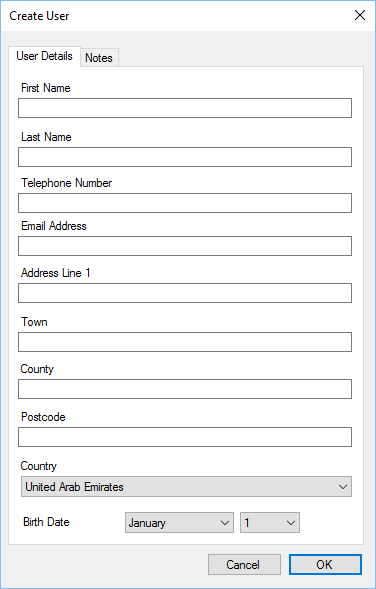

Users can easily create a new customer within the POS.

Enter the customer details in the relevant field.
If a customer does not have an email, leave the field blank and a unique reference will be
provided. Customers without an email cannot be used for marketing purposes.
The birth date can be used to send out birthday offers to customers.